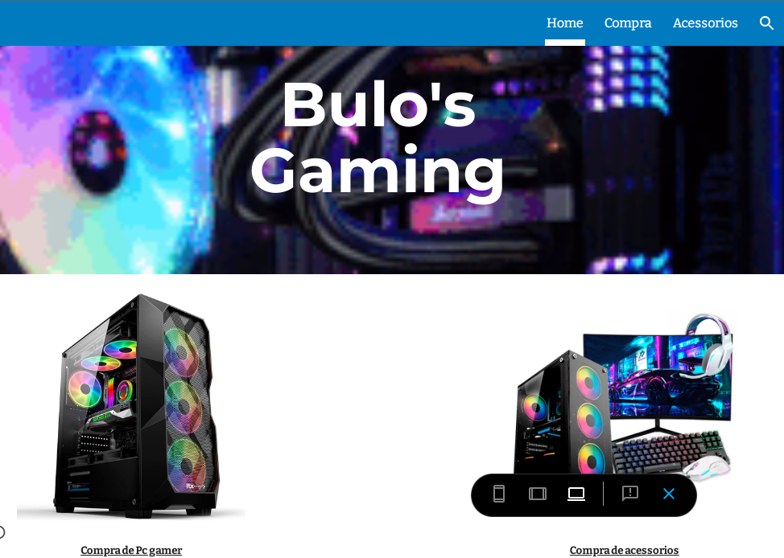

Bem-vindo à minha página! Sou um desenvolvedor apaixonado por inovação e design.
Capacidade de transmitir ideias claramente e entender as necessidades dos usuários.
Habilidade para colaborar com outros profissionais e compartilhar conhecimento.
Flexibilidade para se ajustar a novas tecnologias e metodologias.
Criação de Sites no Google Sites
No módulo de SCAPT, foi-nos dada a tarefa de construir uma página web usando o Google Sites sobre a área da Informática. O meu tema foi sobre venda e montagem de PCs Gamers e seus periféricos, tais como mouses gamers, teclados mecânicos e monitores.
Criação de um Portfólio Pessoal em uma Página Web Estática
No módulo de CPWE, foi-nos dada a tarefa de construir uma página web estática contendo um portfólio cujo objetivo era apresentar de forma organizada e visual as habilidades, experiências e projetos de um profissional ou estudante. Isso permite que ele se destaque em processos seletivos e atraia clientes.
Criação de Sites no Google Sites
Criação de um Portfólio Pessoal em uma Página Web Estática
Ensino Primário (2013-2015): Completei o ensino primário no Externato Fundane, onde desenvolvi habilidades essenciais em leitura, escrita e matemática, que formaram a base da minha educação.
Ensino Secundário (2016-2022): Frequentei o ensino secundário no Externato Fundane, da 8ª à 10ª classe, onde tive a oportunidade de aprofundar meus conhecimentos e explorar áreas de interesse específicas.
Ensino Técnico CV3 (2023-2024): Frequentei o ensino técnico no Instituto de Transportes e Comunicações, em um curso de Electricidade Industrial. Esta etapa foi decisiva para minha formação profissional, pois combinou teoria e prática, proporcionando uma experiência valiosa.
Ensino Técnico CV4 (2024-2025): Continuo meus estudos no Instituto de Transportes e Comunicações, agora em um curso de Suporte Informático. Esta formação técnica é igualmente importante para meu desenvolvimento profissional, alinhando teoria e prática para me preparar para o mercado de trabalho.